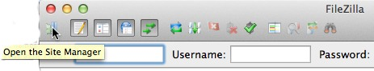
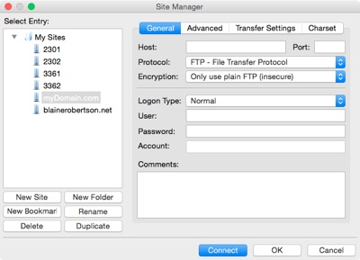

FileZilla Installation
Introduction
This document outlines the basic steps for configuring Filezilla FTP client to work with a site hosted on Bluehost, Hostmonster or Justhost. If you are using a different provider, consult your host provider's site for help if needed. A video demonstrating this process is also available at the bottom of this document.
Prerequisites
This document assumes that you already have:
- Downloaded and installed the Filezilla client.
- Installed XAMPP and know where the HTDOCS folder is located in XAMPP. This is where all website resources will be stored.
- Purchased a hosting account with a hosting provider and have the domain name, FTP username and password to the hosting account. Most providers will send you an email with the username and account information for your site. Consult your email or ask the hosting provider if you have any questions.
Filezilla Connection to Remote Host
- Launch Filezilla
- Click the "Open the Site Manager" button (top left corner, looks like a computer)
 - Click the "New Site" button, a New Site is created in the Select siteEntry area
 - Give the site a name - your domain name is suggested
- In the General area (on the right)
- Type your domain name (e.g. mydomain.com) in the host text box on the right
- Leave the Protocol setting
- Change the Encryption to "Only use plain FTP (insecure)
- Change the Logon Type to "Normal"
- Type your FTP username in the User text box
- Type your password in the Password text box
- Move to the "Advanced" category by clicking on Advanced

- Click the "Browse" button next to the "Default local directory" text box
- Navigate to the folder that will hold your website — this is the htdocs folder in XAMPP.
- Enter "/public_html" into the Default remote directory text box
- Turn on the checkbox for "Use synchronized browsing"
- Move to the "Transfer Settings" tab.

- Click the "Passive" radio button in the "Transfer Mode" group.
- Click the "Connect" button — if everything is correct it should connect to your local directory and the remote host.
Your FTP connection from your local working directory to the remote publishing directory should now be setup. With synchronized browsing enabled when you navigate through your local directory it should also move to the corresponding directory on the remote host.
Video